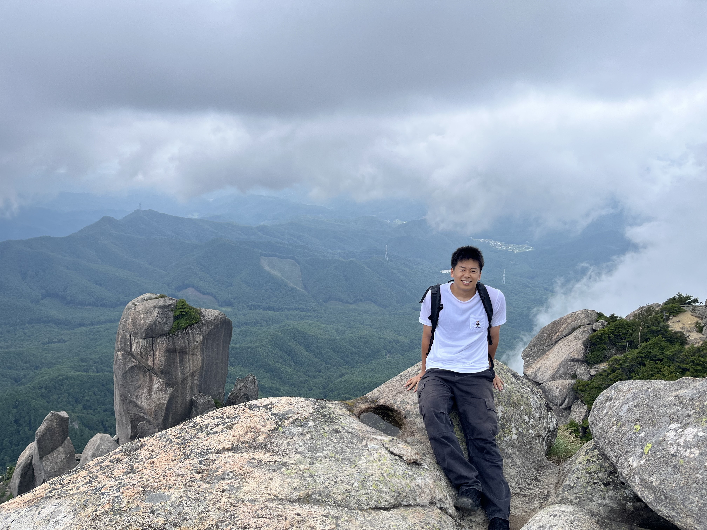

Shogo Iwakata岩片 彰吾
I am a second-year Master’s student at Waseda University, belonging to the Morishima Lab. My research interests include machine learning, computer vision, and robotics. Currently, I am working on imitation learning for robots using a small amount of data.
早稲田大学 大学院 修士2年で、森島研究室に所属しています。機械学習、コンピュータビジョン、ロボティクスに関心があり、現在は少量のデータを用いたロボットの模倣学習に取り組んでいます。
Experience職歴
Oct 2026 – Present2026年10月 – 現在
Hitachi, Ltd.株式会社日立製作所
Research And Development Scientist — Tokyo, Japan研究開発職 / 研究員 — 東京
Sep 2023 – Mar 20262023年9月 – 2026年3月
National Institute of Advanced Industrial Science and Technology (AIST)国立研究開発法人 産業技術総合研究所 (AIST)
Internshipインターン
Education学歴
2024 -
Waseda University早稲田大学
Master's Program, Graduate School of Advanced Science and Engineering, Morishima Lab大学院 先進理工学研究科 修士課程（森島研究室）
2020 - 2024
Waseda University早稲田大学
Bachelor's Program, Graduate School of Advanced Science and Engineering, Morishima Lab先進理工学部 学士課程（森島研究室）
2017 - 2020
Kaisei Highschool開成高等学校
Publications研究業績
International国際会議
Improving Imitation Learning Efficiency for Manipulation through Geometric Prior Pretraining, Shogo Iwakata, Tomohiro Motoda, Ryosuke Yamada, Koshi Makihara, Ryoichi Nakajo, Keitaro Tanaka, Masaki Murooka, Roman Mykhailyshyn, Hirokatsu Kataoka, Shigeo Morishima, Yukiyasu Domae, arXiv preprint arXiv:2609.12721, September 2026.
Viewpoint-Dependent 3D Visual Grounding for Mobile Robots, Shogo Iwakata, Ryosuke Oshima, Hideki Tsunashima, Qi Feng, Hirokatsu Kataoka, Shigeo Morishima, IEEE International Conference on Image Processing (ICIP2025), September 2025.

Domestic国内発表
A New Benchmark for 3D Visual Grounding using Robotic Viewpoints, Shogo Iwakata, Ryosuke Oshima, Hideki Tsunashima, Fumiya Matsuzawa, Qiu Yue, Hirokatsu Kataoka, Shigeo Morishima, 画像の認識理解シンポジウム (MIRU2024)、August 2024.
数式ドリブン事前学習に基づくロボットの方策学習の検証, 岩片彰吾, 元田智大, 山田亮佑, 牧原昂志, 中條亨一, 田中啓太郎, 片岡裕雄, 森島繁生、画像の認識理解シンポジウム (MIRU2025)、August 2025.
Award受賞
Student Encouragement Award, 86th National Convention of IPSJ, March 2024情報処理学会第86回全国大会 学生奨励賞, 2024年3月
Contact連絡先
Email:メール: shogoiwakata@gmail.com